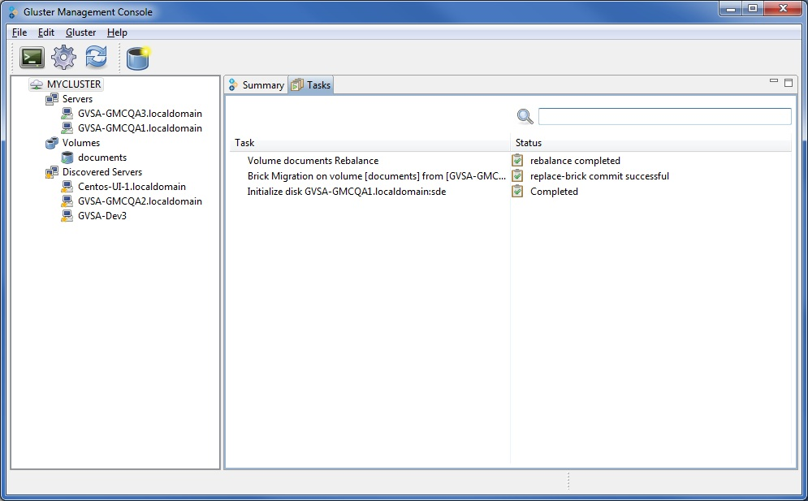

Tasks
Task tab is displayed when you select the cluster node. It displays the status of all running tasks such as disk initialization, brick migration, volume rebalance.

When you select a task on this tab, the relevent toolbar options are enabled. These include pause, resume, abort, commit, or clear operations.